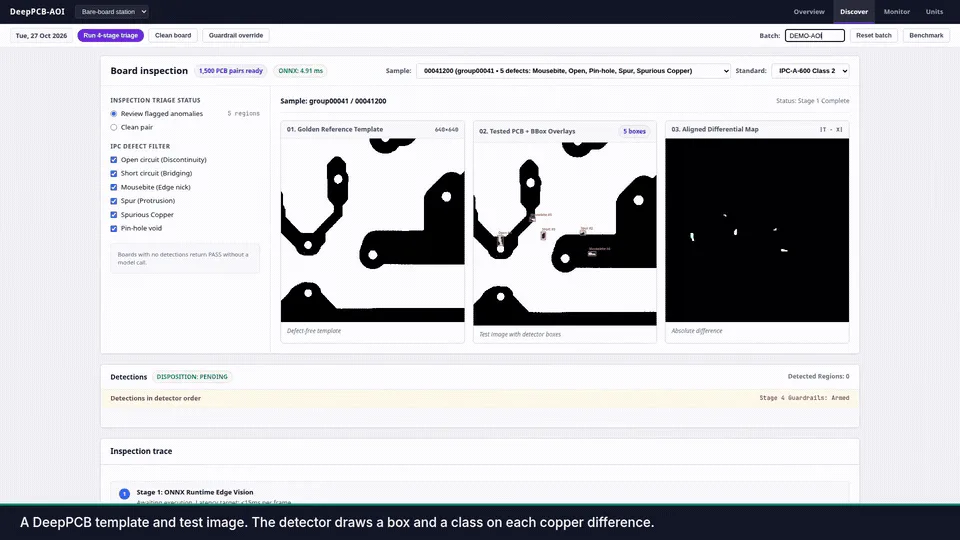

Personal project · Nov 2026
PCB Inspection Viewer
A C# desktop station for DeepPCB-AOI. The operator inspects a board, runs a batch, and reviews history in the app. Questions in English or Chinese become read-only SQL. The model never decides the verdict.

The problem
DeepPCB-AOI already returns PASS, REWORK or SCRAP. A line operator still has to inspect a board, run a folder of boards as a batch, and look back through what was inspected. They also ask about yield and defects in plain English or Chinese instead of writing SQL. A language model may explain a result or draft that query. It must never decide or change the verdict.
What it does
- Inspect. A canvas with zoom and pan. The operator switches the image among the test board, the golden template and a difference heatmap, and can show or hide defect boxes. The side panel lists an IPC-A-600 breakdown of each defect's decision.
- Batch. A folder scan pairs
<id>_test.jpgwith<id>_temp.jpg. The runner uses 1 to 8 workers, capped withSemaphoreSlim. - History. EF Core stores inspections in SQLite. The history grid is virtualized. Images are cached as SHA-256 named PNG files. Double-click drills back into that inspection.
- Daily dashboard. For the chosen local day: yield, rework and scrap counts, the top 3 defect classes, and hourly throughput across 24 hours.
- Export. CSV written as UTF-8 with a byte-order mark, so Excel keeps English and Chinese text, and an A4 PDF summary through QuestPDF. The README calls that PDF a one-page quality audit.
- Ask. A question in English or Chinese is turned into a single read-only SQL statement and run only through SqlGuard.
Guardrails
- 1 · VerdictsPASS, REWORK and SCRAP come only from DeepPCB-AOI's rule engine. The model explains and helps explore. It does not compute or override a disposition.
docs/architecture.md - 2 · SqlGuardThe connection opens read-only and runs
PRAGMA query_only = ON. A query may read onlyv_inspections,v_defectsandv_batches(aWITHclause may name its own CTEs). Comments, a second statement, and keywords for DDL, DML, PRAGMA and related commands are rejected. The statement is wrapped asSELECT * FROM (…) LIMIT 500. Execution is cancelled after 2 seconds. Every attempt, including a rejection, is written to the query log.Sql/SqlGuard.cs - 3 · SummariesGemini or OpenAI must return JSON with a headline and a yield statement. The summary is rejected if it claims every board passed while rework or scrap is present, if a halted line is not mentioned, or if a number in the headline or yield statement is not one of the inspection facts (the yield figure may sit within 0.15 of the computed yield). A rejected or failed call is replaced by the deterministic template. With no model configured, that template is used directly, and Ask falls back to a few fixed queries for common words such as yield, defect, halt and scrap, in English or Chinese.
Llm/SummaryValidator.cs
The WPF shell is in src/PcbInspectionViewer.App. The rules above live in PcbInspectionViewer.Core, which does not reference WPF.
Engineering
- .NET 8. The app is WPF (
net8.0-windows). View models use CommunityToolkit.Mvvm and live in the Core library, which targetsnet8.0and has no WPF references. Directory.Build.propssetsTreatWarningsAsErrors.- xUnit covers the Core library, the view models, and an integration project. The integration test calls
/api/healthand, when the backend is up and the mock board images are on disk,POST /api/upload-triage. - GitHub Actions on Linux checks out DeepPCB-AOI, builds its Docker image, polls
http://localhost:8000/api/health, then runs the Core tests and the integration tests withTEST_BACKEND_URLpointed at that container. A separate workflow runs gitleaks.